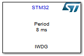
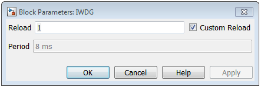
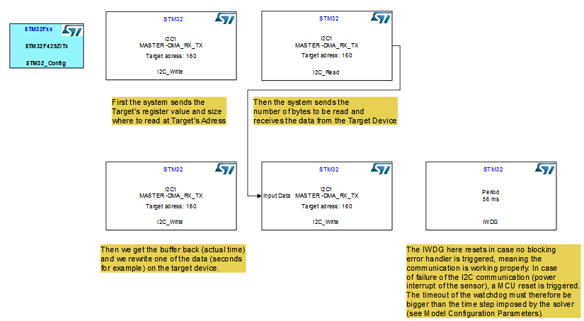
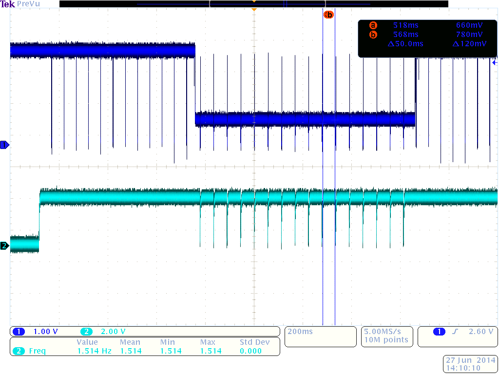

IWDG (Independent WatchDoG)
Block used in the model to trigger a MCU reset when a refresh of the WatchDoG is not done before a timeout.
Contents
S-Function
Nb Input: 0
Nb Output: 0

Displayed on the model :
- Period : Period of the timeout calculated in the block
- S Function name : Model Name
IWDG Block Interface
Main interface of the IWDG model.

Reload and Custom Reload
Check box to be activated to check for the reliability of the value set in STM32CubeMX IWDG configuration step. If checked, the Custom Reload is used in the code. If not, the value is set up from the .ioc file generated by STM32CubeMX, and is disabled.
The Period is obtained by multiplying the Reload value by the LSI which is divided by the prescaler to be customized in the STM32CubeMX IWDG configuration applet.
Example using the IWDG and an I2C communication
This example is based on STM32F429i Discovery Kit and a STM32CubeMX configuration file available in the example folder. It is also given in the I2C_Write model help file. The sensor used here for test/debugging purposes is a MikroE RTC CLICK which integrates a PCF8583P,which is a a clock and calendar chip, based on a 2048 bit static CMOS1 RAM organized as 256 words by 8 bits. The ref. manual can be downloaded freely here.

IMPORTANT :
- For the description of the I2C process included in this example, please refer to the I2C_Test example.
- This example implies a 4-wire connection between the board and the sensor, where GND, 3.3V, SDA and SCL from the chip are respectively connected to GND, 3V, PB9 and PB6 on the STM32F429i Discovery Kit as configured by STM32CubeMX.
- In order to have the blocksets processed in the right order, you must set up priorities for each block decreasingly (except for the configuration block).
- You must set the time step of the solver at a value lower than the IWDG Timeout to visualize the case the MCU resets by unplugging the 3V3 wire for example.
Click to open example I2C_Test_IWDG
Results and performance
This part is giving the results obtained on the oscilloscope with this example, in order to give a basis for debugging further applications using this library.
The I2C time sequence is given below, and is the same as in the I2C_Test example.

A scope is connected to the VRST pin of the board, which is pulled down to 0 when a MCU reset occurs. The timeout is 52.4ms and the window is therefore 46.70 (ms) < refresh < 52.43 (ms).
The figure below shows the 3 steps of the test. First the system operates properly, then one of the wires of the sensor is unplugged, which generates MCU reset (VRST state changes shown by the blue curve toggling), and finally the wire is plugged back, and the system keeps operating properly.
